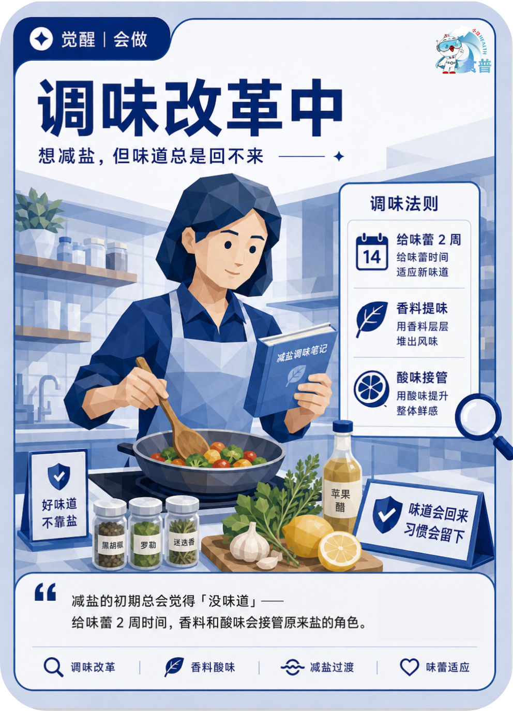

慢病管理人群
觉醒
会做
C13
调味改革中
想减盐,但味道总是回不来
减盐的初期总会觉得「没味道」——给味蕾 2 周时间,香料和酸味会接管原来盐的角色。
手机端可点击“打开原图”后长按图片保存；也可以直接长按上方图卡保存。

想减盐,但味道总是回不来
减盐的初期总会觉得「没味道」——给味蕾 2 周时间,香料和酸味会接管原来盐的角色。
手机端可点击“打开原图”后长按图片保存；也可以直接长按上方图卡保存。